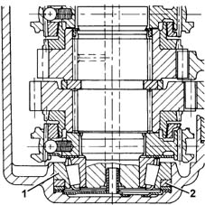
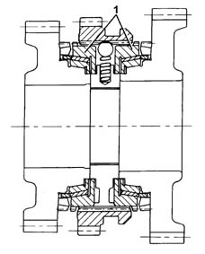
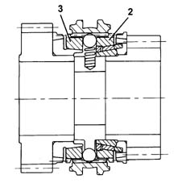
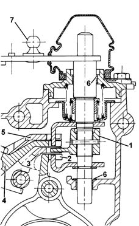
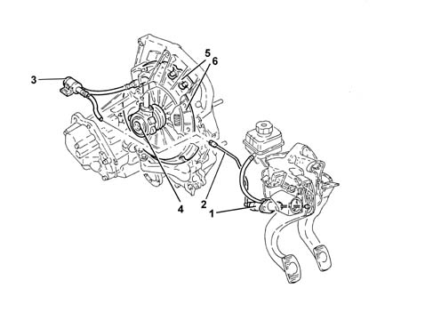
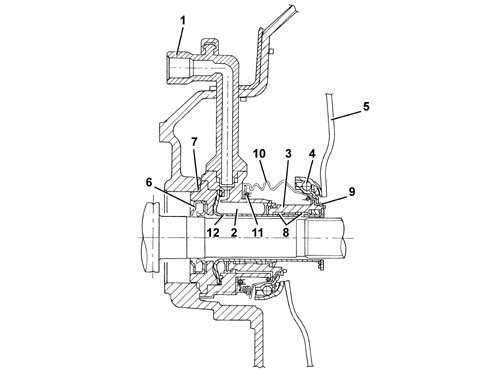

MANUAL GEARBOX AND DIFFERENTIAL COMPONENTS AND SYNCHRONIZERS
- Path
- Descriptions > 21 GEARBOX > MANUAL GEARBOX AND DIFFERENTIAL COMPONENTS AND SYNCHRONIZERS
- Kind
- system description
- Applies to
- engines: 2.0 TB, 2.4 20V, 2.4 JTD 10V; all production periods
- Interactive page
- https://sloeber94.github.io/elrnDB-lThss/en/#/201611
Applies to: all engines; all production periods
DESCRIPTION OF COMPONENTS
Main shaft
The main shaft consists of:
- 1st speed, Reverse and 2nd speed gears
- 3rd, 4th, 5th and 6th speed gears fitted on needle bearings and synchronizers.
The main shaft is supported by two high precision roller bearings.
The main shaft rear bearing (1) has a Viton ring (2) which compensates for axial thermal expansion of the gearbox casing and the main shaft.
This ring makes it possible to:
- reduce the wear of the synchronizers
- improve the matching of the gears
- reduce the noise from the bearings.
- improve the manoeuvrability of the gearbox.

Lay shaft
The lay shaft consists of:
- gears for 1st and 2nd speeds, fitted on needle bearings with synchronizers
- gears for 3rd, 4th, 5th and 6th speeds fitted on the shaft.
The lay shaft is supported by two high precision roller bearings.
Gears
The gears are the following type:
- helical toothed for the forward gears
- straight toothed for Reverse gear.
All the gears have been designed with "high cover factor" teeth, i.e. when one of the matching teeth is in contact, the next one has already begun meshing with the advantage of:
- reducing transmission irregularties
- reducing the noise from the bearings.
The gears for 2nd and 5th speeds and the final reduction have undergone a "super-finish" treatment on the teeth after the thermal treatment.
Synchronizers
The synchronizers for all the gears are Borg Warner with the following type brass rings:
- triple cone (1) for 1st and 2nd speeds
- double cone (2) for 3rd speed
- single cone (3) for 4th, 5th and 6th speeds
Multiple cone synchronizers make it possible to:
- distribute the lever engagement load over several cones
- facilitate the engagement of the gears.


Gear selector/engagement system
The gear engagement/selection system has four selection planes with the gear positioner fitted with a bearing.
The system ensures that it is impossible to engage Reverse gear accidentally because it is on a separate plane.
Bushes with a Permaglide (6) covering are used to reduce wear on:
- the couplings between the gear engagement/selector control shaft and the gearbox casing components
- the couplings between the selector fork rods and the gearbox casing components.
The bushes makes it possible to:
- achieve improved sliding
- produce more accurate gear engagement.

- 1. Selector pawl
- 2. 1st-2nd speed engagement/selector fork
- 3. 3rd-4th speed engagement/selector fork
- 4. 5th-6th speed engagement/selector fork
- 5. Reverse gear engagement/selector fork
- 6. Bushes
- 7. Gear engagement lever
Differential
The clutch control consists of:
- a crown wheel reduction
- a differential housing made from two half-casings which incorporate the planet and satellite gears.
The differential housing is supported by two roller bearings and the ring gear is fastened by means of bolts.
The speedometer idler drive gear is fitted on the outside of the differential housing.
Clutch control
Specifications
The clutch is dry, single plate "thrust" type with hydraulic operation and a coaxial cylinder fitted on the main gearbox shaft.
Composition
The system consists of:
- a clutch pump (master cylinder (1) fastened to the pedals assembly that compresses the oil
- a connecting pipe (2) between the pump and the coaxial cylinder with rapid type connectors
- an impulse damper (3) on the pipe
- a coaxial clutch control cylinder (4)
- a clutch drip tray (5) with diaphragm springs
- a clutch plate (6)
Operation
The pump (1), operated by the pedal, transmits the pressure to the coaxial cylinder piston (4).
The latter acts directly on the pressure plate springs with the consequent detachment of the clutch plate (6).
When the pedal is released, the action of the springs returns the clutch plate in contact with the flywheel and the pressure plate.

- 1. Clutch pump
- 2. Connecting pipe between the pump and the control cylinder
- 3. Impulse damper
- 4. Coaxial clutch control cylinder
- 5. Clutch drip tray
- 6. Clutch plate
Coaxial clutch control cylinder
This is a hydraulic actuator fitted on the main shaft and secured to the bell housing
The oil under pressure enters the hydraulic chamber (2), through the pipe (1), and presses the piston (3) which slides in the guide pipe (12) by means of anti-wear pads (8).
The piston in one piece with the thrust bearing (4) pushes the springs (5).
As the pressure of the oil ceases, the actuator returns to the rest position through the effect of the pressure plate springs (5).
The oil seal inside the hydraulic actuator is ensured by a gasket (9).
The gearbox side seal is ensured by an oil seal (6) and an O-Ring (7).
A rubber seal (10) with a fastening spring (11) provides protection against the intake of foreign bodies.
The coaxial cylinder is fitted with a plastic pipe to protection to O-Ring (8).
The adoption of the hydraulic control with a coaxial cylinder makes it possible to:
- reduce the transmission of vibrations to the passenger compartment due to the damping effect of the oil
- improve the smoothness of the engagement due to a constant adjustment of the clutch pedal setting
- decrease the clutch pedal operating force
- eliminate the thrust bearing control linkage.

- 1. Oil intake pipe
- 2. Hydraulic chamber
- 3. Piston
- 4. Thrust bearing
- 5. Pressure plate springs
- 6. Oil seal
- 7. O - Ring seal
- 8. Anti-wear pads
- 9. Oil seal
- 10. Rubber seal
- 11. Spring
- 12. Guide pipe
Lubrication
The lubrication of the gears is achived by means of ducts inside the following components:
- clutch casing and gearbox casing
- 3rd and 4th speed control rod
- main shaft.
The excellent lubrication of the ducts makes it possible to:
- improve the efficiency of the lubrication
- reduce the amount of oil used thanks to the lubrication aimed at the main couplings.
The use of ZC 75 S synthetic multigrade oil ensures improved manoeuvrability at low temperatures.